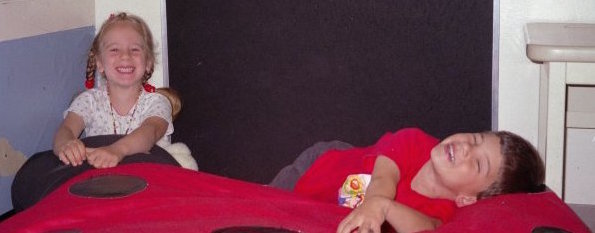

My Background

I was born in St. Petersburg, Russia and became a first generation immigrant to America in 1996. I spent most of my life growing up in a suburb of Boston named Acton. My high school was nicknamed the "MIT of highschool" due to its high pressure in academics, extra-curriculars, and sports.
Growing up in cometitive environment has trained me to push myself to my limits. I chose to attend the prestegous University of Maryland with top ranking business and computer science programs. I started my education as a Computer Science Major and recently switched to a double major in Information Systems and Operations Management/Business Analytics. I began studying those subjects becuase I wanted to combine my love of technology and business.
My goal is to apply technology to solve business problems. I love to think analytically and challenge the norm. I seek to pursure a career at a company where I can work on a forward-thinking, cross-functional team and make an impact.